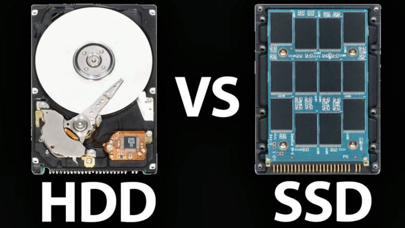

Keeping up with processor innovation can be rather difficult as they are constantly evolving and innovating. Core counts and processing speeds are always increasing. It is important to understand the most up to date information when it comes to processors, but for now I will discuss the important aspects in picking a processor in 2021. Keep in mind the higher the number in general means that higher the cost. Important values to keep track of is core clock which is basically how fast a single core is able to process information. The current standard is around 3.8GHz, but is continually changing. Arguably core count is the more important of these values as well as more cores means more items can be processed in parallel. Typically a an 8 core will out perform a 6 core as the 8 core simply has more cores even if it had a slightly slower core speed. Multithreading is something to be wary of as well. Without going into the complexity multithreading speeds up processing speeds as it splits the data into multiple cores to be processed simultaenously. It is important to keep in mind that a processor should be around 25% to 35% of your entire computer's cost as it is the most important part of the hardware.

The motherboard could easily be the most neglected aspect as a simple motherboard with a compatible chipset is sufficient. The motherboard is one of the areas that an individual can save costs on. The socket must be compatible with the CPU otherwise the motherboard is practically useless to the user. Another aspect is the size of the motherboard as ATX motherboards are the standard size, but if an individual wanted a smaller tower then a micro-Atx would be preferable. The smaller size sacrifices expansion and other peripherals while also saving cost. For the average consumer memory should not be an issue as many motherboards support up to 128GB of RAM which is much more than any consumer would ever need. Memory slots does play a role if an individual wants 4 RAM sticks or wants to expand down the line. Otherwise motherboards has many conveniences that can be foregone such as wifi enabled or RGB lighting. The motherboard should be less than 10% to 15% of the total of the computer.
RAM should not be neglected to save costs. While it is not the most important part it plays a large role in user experience and will be noticed if skimped on. The architecture should be compatible witht he motherboard which currently DDR4 is the current version. If you are buying new parts this should not be an issue as DDR3 is not being supported any further. RAM speeds can range wildy from 2400MHz to 3600MHz. It is important to match the RAM speed to what the motherboard allows as getting a RAM stick faster than the motherboard can handle will lose all the benefits. RAM should be chosen as the fastest speed within your budget as well as in pairs rather than singles. It is always run RAM in pairs as it is more efficient to process data in parallel. RAM is likely be approximately 8% of the cost of the entire build.

Storage is a hot debate for many consumers as there is primarily two different ones to pick from. There is the Hard Disk Drive(HDD) which is cheaper, but sacrifices speed. It tends to have much more storage at the same price point than a Solid State Disk(SSD). A Solid State Drive on other hand is much more efficient in terms of speed and longevity. An HDD is nearly half the cost of an SSD is an argument to only use HDD, but the speeds of SSD is also an argument to make as consumer experience needs to be fluid. Many people compromise with hybrid builds with an SSD storing important data while an HDD is used for larger data. Capacity is the primary attribute to look at as we need sufficient space to store the data. Following that the write and read speeds are also important which is what primarily differentiates the two. Hybrid builds is the middle point of saving cost and efficiency, but does not excel in one or the other. Storage will cost around 10% to 20% of the entire build.

Graphics card is another expensive part of the computer typically making up another 25% to 35% of the cost of a computer. Here we are looking at many different stats such as clock speed and video memory. Similar to a CPU clock speeds is how quick the graphics card can render graphics. The higher the number the quicker it can show images to the user. Unlike the CPU the graphics card has a larger memory allowing quicker accessing speeds. The more memory it can store the quicker it can move to render those graphics rather than queuing them up in the RAM. Due to the technology, the higher the numbers are the more expensive the graphics card is.
The power supply is likely the cheapest part to purchase. This does not mean one should buy the cheapest power supply as a poorly made power supply can be dangerous. A poorly built power supply can melt or even explode therefore it is not a part an individual should cheap out on despite fulfilling the criteria. The most important value is to buy a power supply that will fulfill the power needed to run your system which can range from 500W to 900W. Another aspect is purchasing from a reputable brand as due to the low cost of building a power supply many have entered to the market to make a profit. Purchasing from a reputable supplier will avoid the problems mentioned earlier. A power supply will likely be around 6% to 8% of cost of the entire computer.
The case serves to hold your motherboard in place while also serving to cool it down using its fan. Other than that there is no necessary criteria to pick a case other than it needs to be able to hold the motherboard. Cases come in a variety of shapes, colors, sizes, and purposes. It is possible to save cost on this part as well avoiding a nice looiking appearance while having a powerful computer. On the other hand if you want to display your computer, choosing a presentable case may be a priority. There is no specific values one should be looking for as there is no performance to cost ratio to discuss. The case is purely aesthetic and that is dependent on the consumer.